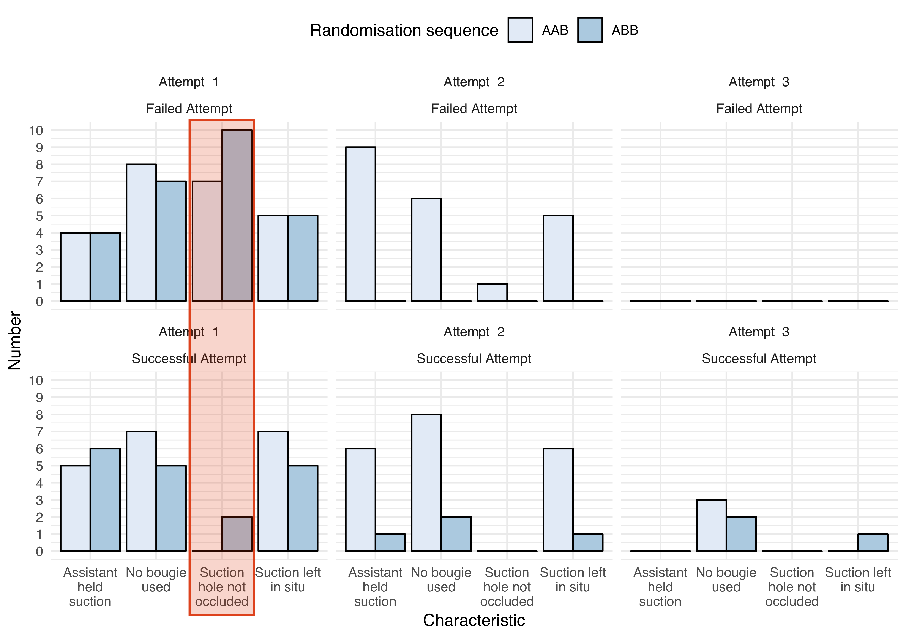

164 paramedics
Two groups, three intubation attempts:
Proportion of successful intubations between groups on the second intubation attempt
SALAD
No SALAD
Difference 36.5%
(95%CI 24.9–49.1%, p<0.001)
In this manikin study, paramedics were able to intubate a soiled airway significantly more often when using the SALAD technique.
